Scanned 13,737 Reddit posts across 29 subreddits over 90 days. Filtered to 1,878 complaint-shaped posts. Clustered into 45 themes. Each theme became a Phase 1 spec, then ran a gauntlet of 3 Amon judges. The protos below are sorted best to worst.
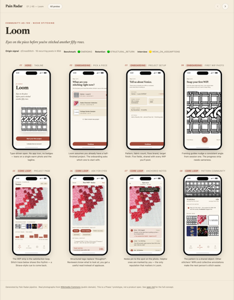
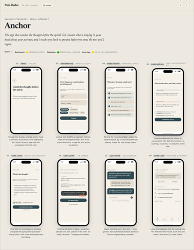
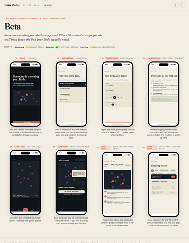
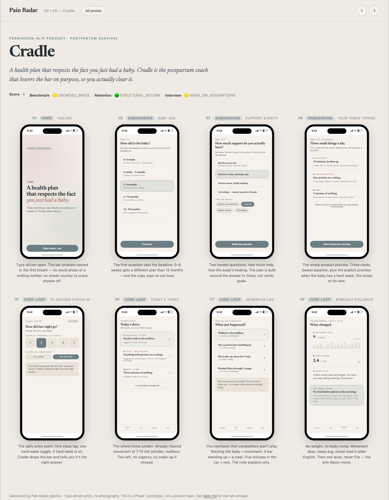
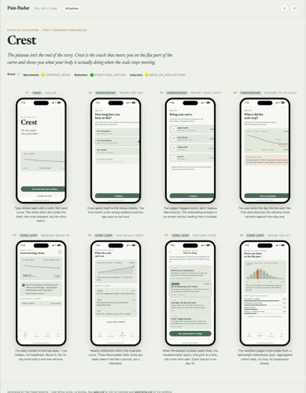
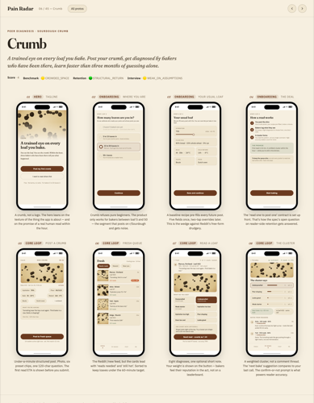
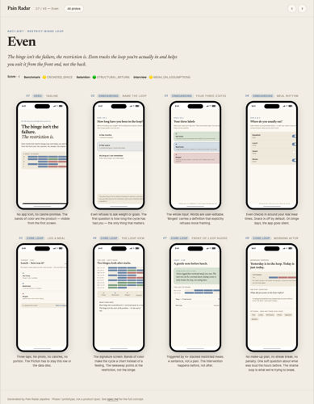
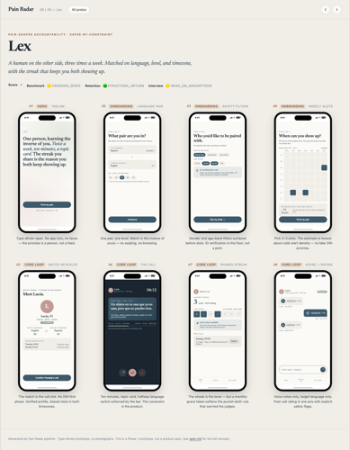
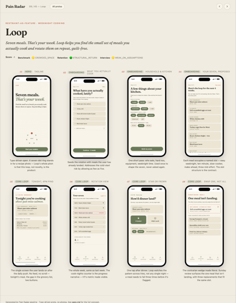
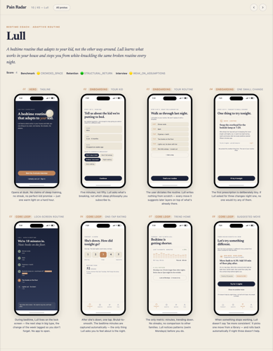
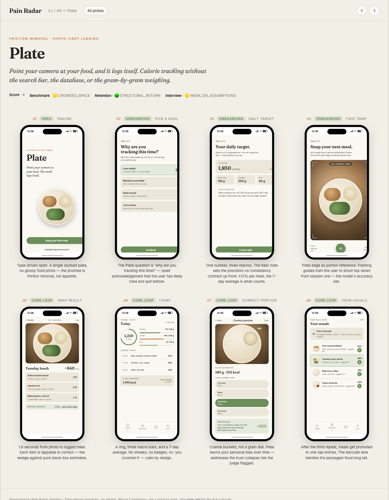
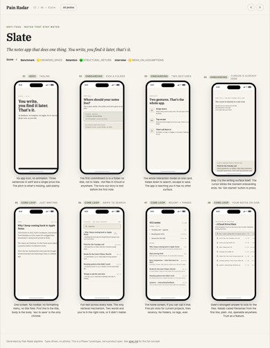
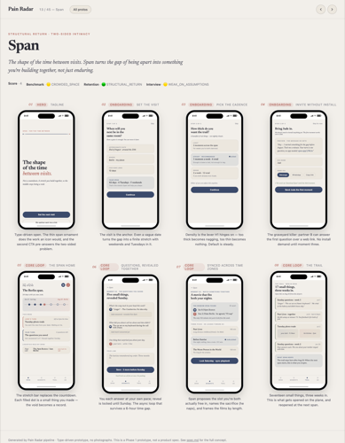
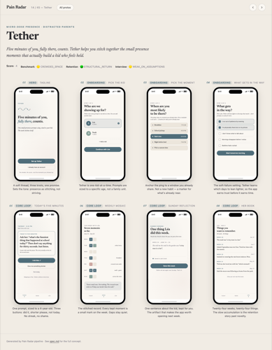
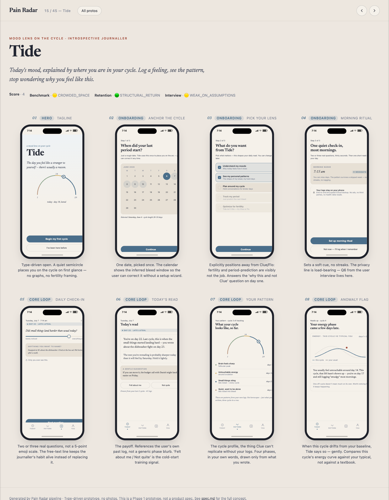
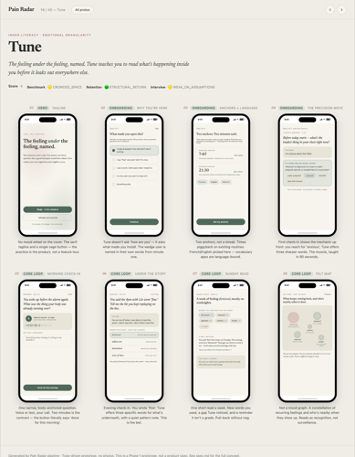
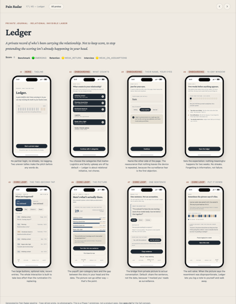
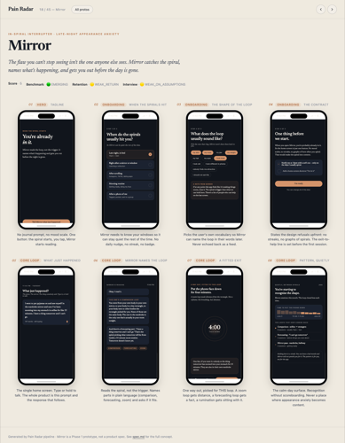
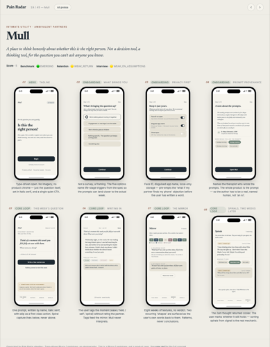
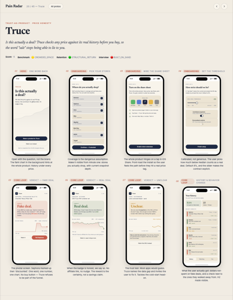
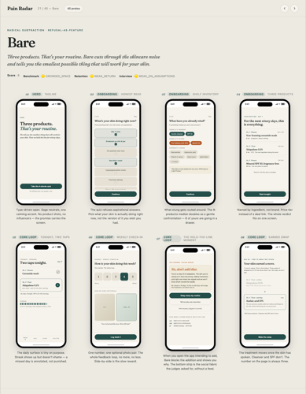
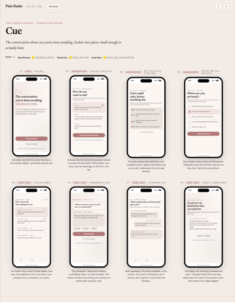
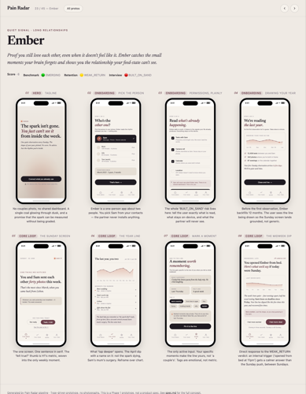
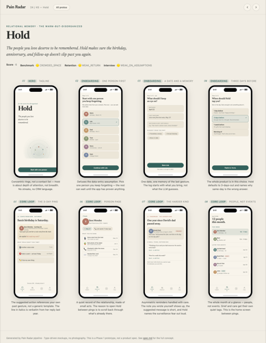
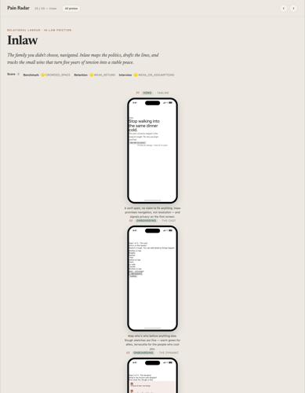
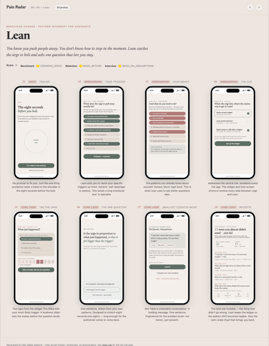
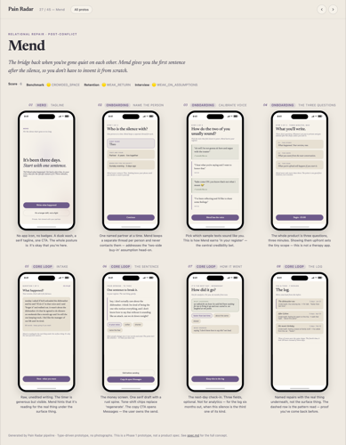
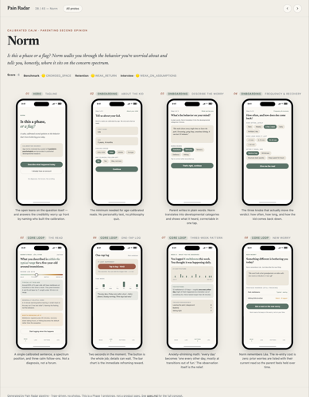
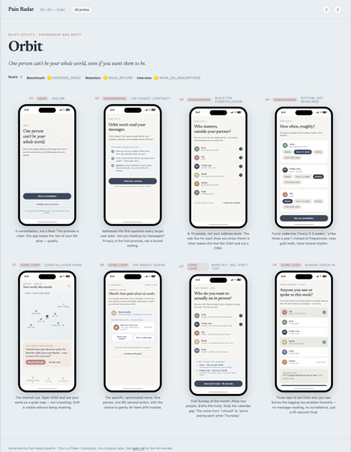
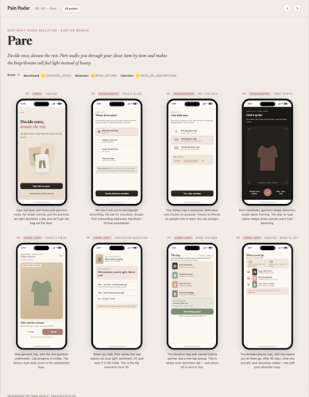
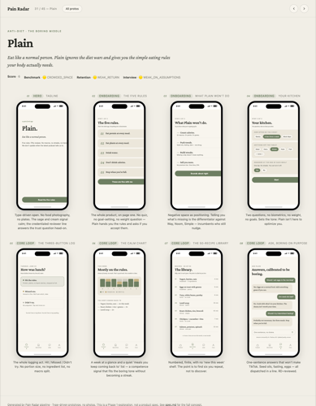
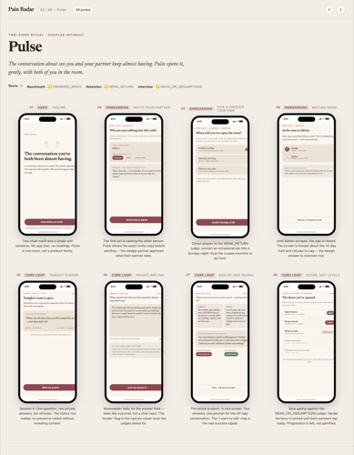
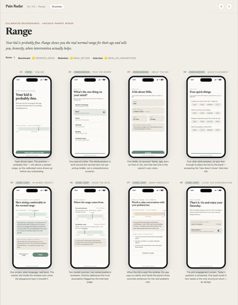
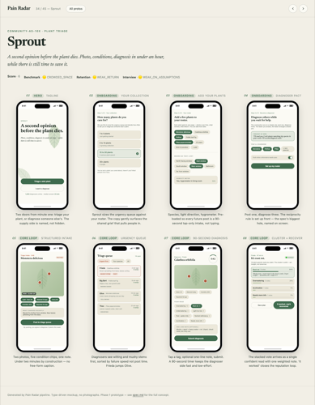
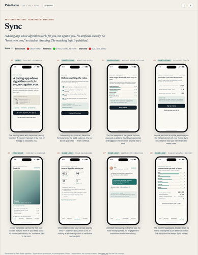
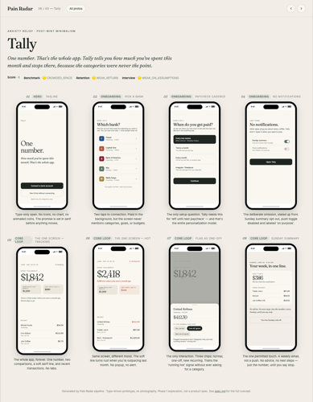
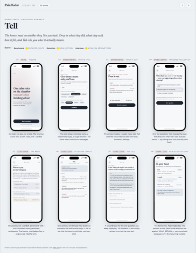
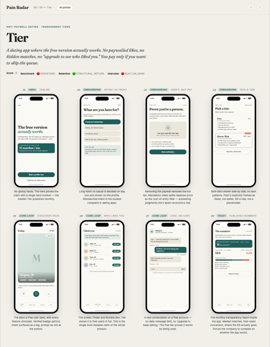
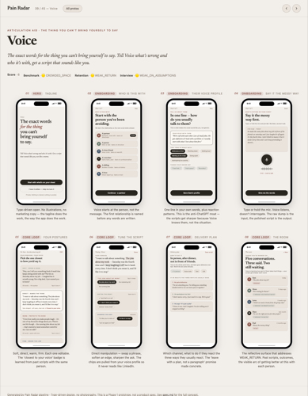
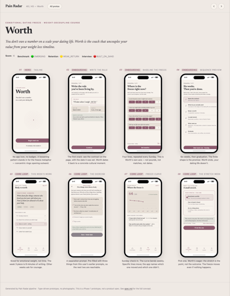
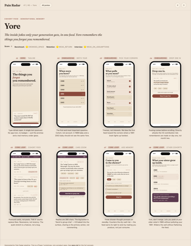
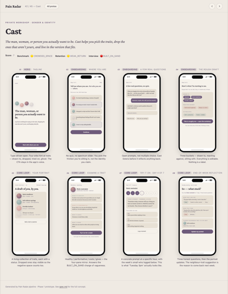
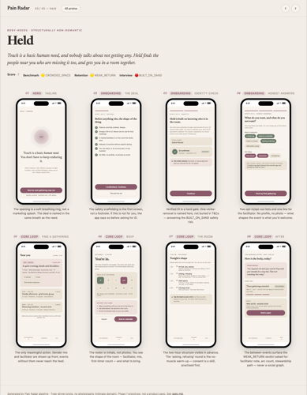
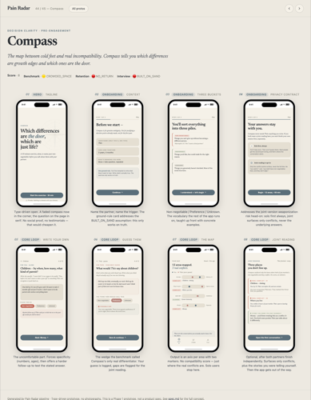
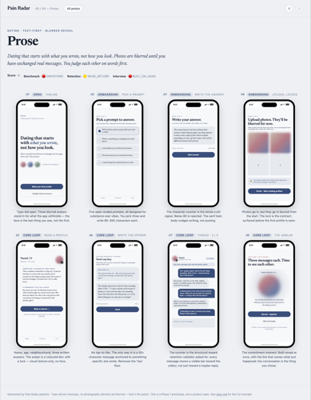